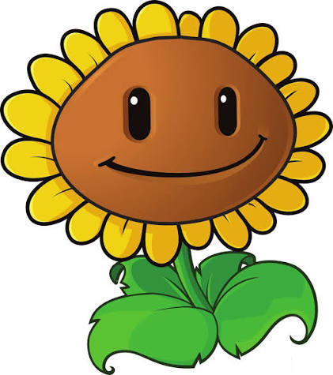
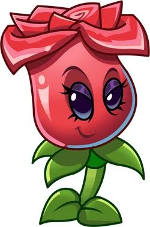

Descubra nossas plantas e flores destaques

1. Girassol
ilumina o seu quintal, afasta os entrosas com seu brilho e se conectado a uma bateria, carrega o seu celular!
Ver produto
2. Rosa
Adicione beleza ao seu jardim com nossa seleção de rosas coloridas!
Ver produto
3. Cacto
Perfeito para quem busca uma planta que espete os entrosas e ainda decore o ambiente!
Ver produto